| HOME | DOWNLOAD | DOCUMENTATION | FAQ |
> Home > Documentation
Complex Spherical Harmonics
"Geodesy" 4π-normalized complex spherical harmonics
Any complex square-integrable function can be expressed in spherical harmonics as
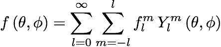where flm is the complex spherical harmonic coefficient, Ylm is the complex spherical harmonic function, position on the sphere is represented in terms of co-latitude θ and longitude φ,and l and m are the spherical harmonic degree and order, respectively. The complex spherical harmonics are defined as
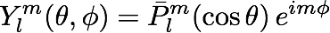where the normalized associated Legendre functions, as used in geodesy and gravity applications (calculated by the routine PlmBar with cnorm=1), are given by
with the following definition for the unnormalized associated Legendre functions:
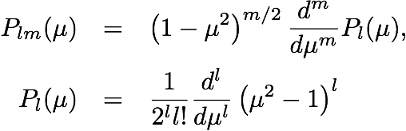The normalized associated Legendre functions are orthogonal for a given value of m,
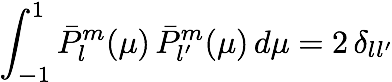.The normalized Legendre functions (including the orthonormalized and Schmidt semi-normalized functions) are efficiently calculating using the algorithm of Holmes and Featherstone (2002, J. Geodesy, 76, 279-299) that is accurate to approximately degree 2800. Note that the above definition of the associated Legendre functions does not include the Condon-Shortley phase of (-1)m that is often employed in the physics and seismology communities (e.g., Varsalovich et al., 1988; Dahlen and Tromp, 1998). This can be included by specifying the optional argument CSPHASE=-1 in most of the Legendre and spherical harmonic routines.
The complex spherical harmonics possess the following symmetry relationship for positive and negative angular orders,
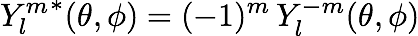and satisfy the orthogonality relationship
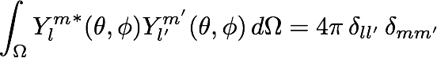.Using this relationship, it is straightforward to show that the spherical harmonic coefficients of a function can be calculated by the integral
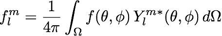.The cross-power of two functions f and g is equal to
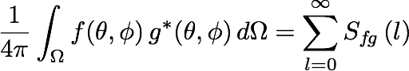,where the "cross-power spectrum" of the two functions is given by
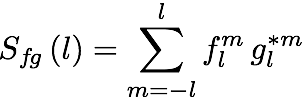.If the functions f and g have a zero mean, then Sfg is the contribution to the covariance as a function of spherical harmonic degree.
If a function defined on the sphere is entirely real, then the real and complex spherical harmonic coefficients are related by
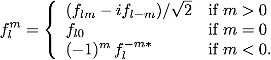Other complex normalization conventions
The above 4π normalization scheme is the default for all routines in SHTOOLS with the exception of MakeMagGrid2D, which uses the standard geomagnetism Schmidt semi-normalization. By specifying an optional parameter norm, the default normalization can be changed in most of the routines (e.g., SHGLQ, MakeGridGLQ, SHExpandGLQ, SHExpandDH, MakeGrid2D, MakeGridPoint, SHMultiply and SHExpandLSQ). The following normalizations are permitted:
- norm=1: Geodesy 4π normalization (default, unless stated otherwise).
- norm=2: Schmidt semi-normalization.
- norm=3: Unnormalized.
- norm=4: Orthonormalized.
Explicit expressions for the Legendre functions and real spherical harmonic normalizations are the following:
Geodesy 4π
Schmidt semi-normalized
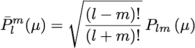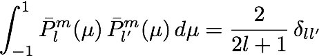
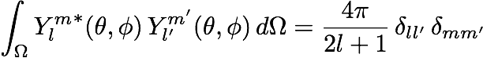
Unnormalized
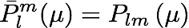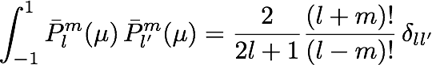
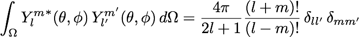
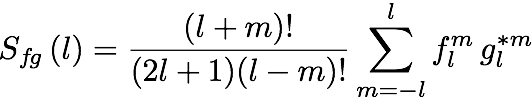
Orthonormalized
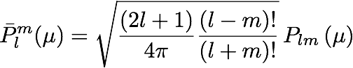Further information
Further information regarding spherical harmonic functions can be found at the following web sites:
> Home > Documentation
| Laboratoire Lagrange | Observatoire de la Côte d'Azur | © 2016 SHTOOLS |